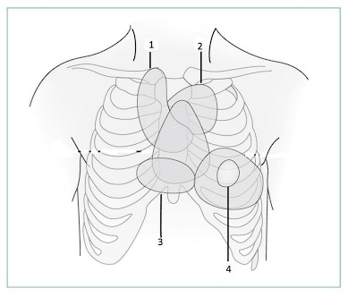

No contexto de febre reumática, a pro laxia com penicilina benzatina a cada 21 dias é crucial para prevenção de recorrências do quadro. Quanto a esse assunto, assinale a alternativa correta.
Em relação à febre reumática, é correto afirmar que
A Febre Reumática Aguda (FRA) é uma doença multissistêmica resultante de uma reação autoimune. A maioria das manifestações regridem completamente, mas a lesão valvar cardíaca (Doença Cardíaca Reumática – DCR) pode persistir após o desaparecimento dos outros achados. Analise as assertivas relacionadas à FRA e DCR. I. FRA é uma doença que acomete principalmente crianças entre 4 e 7 anos de idade. II. FRA é causada exclusivamente por infecção do trato respiratório superior com estreptococos do grupo A. III. No desenvolvimento da DCR podem ser afetados o endocárdio, miocárdio e pericárdio, ocorrendo em até 60% dos pacientes de FRA. IV. A lesão valvar é o principal marco da cardite reumática, sendo a valva aórtica a mais afetada. Escolha entre as alternativas abaixo, as assertivas corretas.
Qual a lesão cardíaca mais frequente na fase aguda de febre reumática?
Menino, 7 anos de idade, iniciou com artrite em joelho esquerdo há 5 dias, artrite em joelho direito há 2 dias e artrite em tornozelo direito há 1 dia. Exame físico: artrite em joelho e tornozelo direitos, com dor à mobilização dessas articulações. Exames laboratoriais: VHS = 50 mm/h, PCR = 15 mg/dL. O achado que corrobora o diagnóstico de febre reumática é
Na febre reumática secundária ao estreptococo beta-hemolítico, as manifestações valvulares cardiológicas mais frequentes podem ser auscultadas nos sítios de ausculta identificados, na imagem abaixo, pelos números:

A febre reumática é uma doença importante na práticaclínica pediátrica. Sobre a febre reumática, é CORRETO afirmar que:
Em relação à Febre Reumática, qual destes critérios não constitui um critério maior de Jones?
Adolescente de 15 anos, sexo masculino, compareceu a UBS há 03 semanas com quadro de faringite aguda, sendo medicado com sulfametoxazol-trimetoprim. Retorna há 01 semana com quadro de febre e dor articular. Ao exame: Febre de 38,9 graus, FC:120 bpm, FR: 24 irpm, sem sopros ou alterações cardíacas. Apresenta exantema macular, não pruriginoso, com círculo eritematoso circundado a pele normal e sinais inflamatórios em joelho esquerdo e tornozelo direito. De acordo com a hipótese que você pensou, o exame completar para seguimento do caso será:
Adolescente de 15 anos, sexo masculino, compareceu a UBS há 03 semanas com quadro de faringite aguda, sendo medicado com sulfametoxazol-trimetoprim. Retorna há 01 semana com quadro de febre e dor articular. Ao exame: Febre de 38,9 graus, FC:120 bpm, FR: 24 irpm, sem sopros ou alterações cardíacas. Apresenta exantema macular, não pruriginoso, com círculo eritematoso circundado a pele normal e sinais inflamatórios em joelho esquerdo e tornozelo direito. Baseado nos dados informados você considera como melhor hipótese:
Menino, 10a, refere que há duas semanas tem apresentado di culdades para escrever e para se alimentar (levar o alimento à boca). Além disso refere desequilibrio ao andar, que piora quando ca nervoso. Nega febre, cefaleia ou perda de consciência. Antecedentes: quadro de febre, cansaço e dor em tornozelo D e ombro E há dois meses. Exame físico: corado, hidratado, acianótico, irrequieto, consciente. Exame neurológico: reflexos e força muscular normais; articulações sem alterações, com movimentos assimétricos de face e de língua. O TRATAMENTO INICIAL É:
Revisar: possível letra faltando em enunciado
Adolescente, sexo feminino, há 10 dias apresentou artrite em joelho direito com duração de 3 dias e, após, em joelho esquerdo com duração de 5 dias. No momento da consulta, apresentava artrite no tornozelo direito há 2 dias. Relata ainda febre não aferida no início do quadro. História de dor de garganta há 1 mês, sem uso de medicações. Nega trauma e viagem recentes. Ao exame físico, bom estado geral, corada, afebril, eupneica. Ausculta cardiovascular: sopro holossistólico, mais audível em foco mitral. Frequência cardíaca: 72 bpm. Artrite em tornozelo direito, com di culdade de deambulação. Sem lesões de pele. Exames laboratoriais: hemograma sem alterações, VHS 90 mm/h (até 10 mm/h), proteína C reativa: 10 mg/dL (inferior a 0,3 mg/dL) e antiestreptolisina O 800 UI/mL (inferior a 200 UI/mL). A hipótese diagnóstica para o caso e a principal complicação são:
Sobre febre reumática é correto afirmar:
Menina de 10 anos, previamente hígida, é levada para atendimento com quadro de movimentos involuntários em membro superior direito há um mês, que desaparecem durante o sono, mas que vêm piorando a intensidade há uma semana. A criança relata problemas para acompanhar tarefas escolares, pois está com di culdade para escrever. Na anamnese dirigida, a mãe nega outros sintomas, porém refere quadros recorrentes de amigdalite no início da idade escolar. Ao exame físico, está em bom estado geral, porém notam-se movimentos rápidos, involuntários e incoordenados, em membro superior direito. À protrusão da língua, são percebidas fasciculações. Ausculta cardíaca revela ritmo cardíaco regular, FC = 100bpm, sopro sistólico (3+/6+), regurgitativo, principalmente em foco mitral. O restante do exame físico é normal. Sobre as características dos movimentos involuntários apresentados pela menina, o mais provável é que haja:
A febre reumática é uma doença sistêmica de caráter autoimune desencadeada após a infecção pelo - hemolítico São manifestações maiores segundo os Critérios de Jones modificados, EXCETO:
Leia o caso clínico a seguir. Paciente do sexo masculino, de oito anos, está com di culdade de deambular há quatro dias, queixando-se de dor intensa primeiro no tornozelo e hoje no joelho da perna direita. Nega traumas. Relata febre e dor de garganta há três semanas, que melhorou após uso de Nimesulida por cinco dias há três semanas. Não apresentou mais febre. Ao exame: BEG, corado, hidratado, eupneico, afebril, acianótico, anictérico. Ausculta cardíaca: ritmo regular em dois tempos, bulhas normofonéticas com sopro sistólico (3+/6+) em foco mitral, com irradiação para axila e dorso, sem alteração com a respiração ou posição do paciente. FC: 100 BPM. Membros: edema, calor e hiperemia leve de joelho direito. Tornozelo direito sem alterações. Ausculta pulmonar e abdome sem alterações. Pele sem alterações. Foram solicitados: Hemograma, VHS, PCR e proteinograma. Quais outros exames são indicados e qual o tratamento para o diagnóstico mais provável?
A febre reumática é uma doença inflamatória e autoimune que apresenta como característica:
Você atende uma escolar de 7 anos, previamente hígida, que há 20 dias apresenta labilidade emocional, quedas frequentes, descoordenação dos movimentos que melhoram enquanto dorme. Ao exame físico, observa-se hipotonia, movimentação involuntária e constante de membros, além de sopro holossistólico em foco mitral 3+/6+. Qual das alternativas abaixo define as manifestações clínicas apresentadas pela paciente?
A febre reumática (FR) é uma doença inflamatória que ocorre como manifestação tardia de uma faringotonsilite causada pelo estreptococo beta-hemolítico do grupo A (Streptococcus pyogenes), em indivíduos geneticamente predispostos. São critérios maiores (de Jones) para diagnóstico:
Jovem, do sexo masculino, dezesseis anos de idade, foi levado ao pronto socorro com quadro de há uma semana estar apresentando febre e dor em joelho direito, no tornozelo direito e no punho esquerdo de caráter migratório. Nos últimos dois dias, começou a ter dispneia ao executar atividades físicas menos intensas que as habituais e ortopneia, e relata sentir há dois dias dor precordial leve e contínua. Exame físico: palidez cutânea, temperatura axilar de 38,2ºC, pressão arterial de 120mmHg x 72 mmHg, frequência cardíaca de 110 bpm. ritmo cardíaco regular etríplice (por terceira bulha), bulhas hipofonéticas e taquicárdicas, presença de sopro holossistólico, mais bem audível no foco mitral, irradiado para região axilar. Na borda esternal esquerda baixa, foi auscultado atrito pericárdico. Havia estertores pulmonares em terços inferiores de ambos os hemitórax. Abdome livre e sem visceromegalias. O eletrocardiograma (ECG) mostrou taquicardia sinusal, frequência ventricular média de 120 spm, sobrecarga de câmaras esquerdas, extrassístoles ventriculares isoladas e alterações difusas e secundárias da repolarização ventricular. O resultado das hemoculturas colhidas foi negativo. O hemograma evidenciou discreta leucocitose, sem anemia. Observaram-se aceleração da velocidade de hemossedimentação (VHS), elevação dos níveis séricos de antiestreptolisina O e de proteína C reativa. A principal hipótese diagnóstica para esse paciente é:
Menino, 8 anos de idade, apresenta quadro de odinofagia e febre de até 39°C há 2 dias. Nega tosse ou coriza. Sem queixas gastrointestinais ou urinárias. Sem comorbidades prévias. Ao exame, a criança está em com estado geral e na oroscopia apresenta amigdalas hiperemiadas e hipertro adas, com petéquias em palato. Linfonodos broelásticos, de até 1 cm palpáveis em cadeia cervical anterior e posterior. Sem outras alterações significativas ao exame clínico. Foi colhida uma pesquisa rápida de estreptococo, com resultado negativo. Então, foi optado por colher um cultura de orofaringe, prescrito apenas medicações sintomáticas e orientado retorno obrigatório em 72 horas, para checar o resultado da cultura e decidir sobre a necessidade de antibioticoterapia. Pensando na profilaxia de febre reumática, pode-se afirmar que
A febre reumática é uma complicação inflamatória aguda, não supurativa da infecção por estreptococos do grupo A, causando combinações de artrites, cardites, nódulos subcutâneos, eritema marginado e coreia. O diagnóstico baseia-se na aplicação dos critérios de Jones, relacionados com dados de história, exame e testes laboratoriais. O tratamento inclui ácido acetilsalicílico ou outros anti-inflamatórios Não Esteroides (AINE), corticoides durante cardites graves e antimicrobianos para erradicar infecção estreptocócica residual e prevenir a reinfecção. São critérios menores de Jones, EXCETO:
Escolar de 8 anos, previamente hígido, há 4 dias apresenta febre 38,5 °C, uma vez ao dia, associado à dor e inchaço nos tornozelos e joelho esquerdo. Após dois dias houve melhora dos sintomas nessas articulações, porém, iniciou com dor no punho direito. Ao procurar o pronto socorro, apresentava-se em REG, hipoativo, corado, hidratado, afebril, frequência cardíaca de 132 bpm, frequência respiratória de 28 ipm, com edema em joelho esquerdo e dor e limitação no punho direito. A velocidade de hemossedimentação era de 80 mm na primeira hora e o hemograma e o raio-X das articulações acometidas não apresentam alterações. Qual a abordagem diagnóstica inicial seria adequada para esse paciente?
Dentre as alternativas a seguir, aquela que não representa um critério Maior para o diagnóstico da doença reumática (febre reumática) é:
Escolar, sexo masculino, 9 anos de idade, com 28kg, teve diagnóstico recente de febre reumática por apresentar os seguintes critérios: coreia, poliatrite migratória, febre, elevação de PCR e VHS e aumento dos níveis de antiestreptolisina O. Para esse paciente, é correto afirmar que:
Adolescente, 13 anos, sexo masculino, com história de faringite aguda há três semanas, tendo sido medicado com cefalexina. Há uma semana vem apresentando febre e dor articular. Exame físico: febril (38,9°C); FC 120bpm; FR 24irpm; sem sopros ou alterações cardíacas; exantema macular, não pruriginoso, com círculo eritematoso circundando a pele normal e sinais inflamatórios em joelho esquerdo e tornozelo direito. Qual dos seguintes exames seria mandatório no caso clínico descrito?
São considerados sinais maiores dos critérios de Jones para o diagnóstico de febre reumática:
Em relação à febre reumática pode-se afirmar que:
Adolescente de 14 anos, sexo masculino, apresentou febre que durou cinco dias, associada à artralgia em punhos. O quadro articular evoluiu com edema e dor em joelhos, progredindo para limitação dolorosa de tornozelos no decorrer de três semanas. Foi medicado com dipirona, persistindo a claudicação e limitação para deambulação. Ao exame físico, estava afebril e, além da artrite, foi observado sopro sistólico em foco mitral de 4+/6, FC: 130bpm. Negava história pregressa de amigdalite. Exames complementares: EAS: normal, VHS: 62mm/1ª hora, proteína C reativa: 35mg/dl, hemograma: Hb: 10,1g/dl, leucócitos: 19.600/mm3 (segmentados: 86%, linfócitos: 6%), plaquetas: 325.000/mm³, antiestreptolisina 0: 420 UI/dl, hemocultura: negativa, cultura de orofaringe: negativa, ECG: normal. Considerando a hipótese diagnóstica de febre reumática, pode-se AFIRMAR que
Em relação a coréia na febre reumática, assinale a alternativa correta:
Escolar de 8 anos, sexo feminino, é levada ao pronto atendimento por ter se cortado com uma faca no rosto. Anamnese revela que usou penicilina benzatina de 3 a 6 anos por problemas no coração. Mãe refere irritabilidade, choro fácil, descontrole emocional e quedas frequentes. Ao exame: hipotonia muscular leve , movimentos involuntários do rosto e das mãos. Baseado na sua hipótese diagnóstica, deve ser solictado a pesquisa de anticorpos contra:
Adolescente de 12 anos de idade, iniciou quadro febre, poliartrite migratória em articulações de joelhos, tornozelos e punhos com duração do envolvimento de cada articulação em torno de 6 dias. Evoluiu com dispneia, taquicardia, tiragem intercostal e de fúrcula, ictus cordis palpável e visível em foco mitral. Apresenta ainda, edema de face, e membros inferiores, e ainda, hepatomegalia dolorosa. Hemograma com anemia, leucocitose, plaquetas normais. VHS: 90 mmhg, PCR reagente. Baseado nos dados acima, o diagnóstico mais provável é:
Criança de 12 anos de idade, apresenta artrite migratória em joelhos, tornozelos e punhos, associada a febre de 39 graus Celsius. Exames de laboratório revelam ASLO 600 (valor de referência: até 200), PCR 5 (normal até 0,1), VHS 120 mm/primeira hora (normal até 20 mm). Realizado ecocardiograma, normal. Em relação ao caso descrito, assinale a alternativa correta.
Adolescente de 13 anos, masculino, previamente hígido, queixa-se de febre há 10 dias associada à dor em joelho direito e punho esquerdo. Há 24 horas, vem apresentando tosse seca e falta de ar. Relata que, há 3 semanas, apresentou dor de garganta e cou bem com o uso de ibuprofeno. Dados positivos do exame físico: dor à mobilização do joelho direito e do punho esquerdo, sem limitação na amplitude do movimento, nem calor ou hiperemia local. Aparelho respiratório com estertores nos em bases e FR: 40irpm. Aparelho cardiovascular: ritmo cardíaco regular em 3 tempos, frêmito palpável em foco mitral e sopro holosistólico (4+/6+) em foco mitral com irradiação para axila, FC: 120bpm, PA: 110x70mmHg, pulsos cheios, extremidades aquecidas. Abdome: fígado palpável a 3 cm do rebordo costal direito. Qual a melhor combinação de exames complementares e tratamento inicial para o caso dentre as alternativas abaixo?
Alessandro, 15 anos de idade, dá entrada ao Pronto-Socorro Pediátrico com história de distúrbio de movimento com início há 2 meses. Ao exame clínico-neurológico, o paciente apresenta Coréia de caráter generalizado, com provas de persistência motora alteradas e reflexo pendular presente. Na investigação, seu ecocardiograma demonstrou a presença de uma endocardite asséptica em válvula mitral. Sobre o caso clínico, assinale a alternativa CORRETA.
Menina de 9 anos de idade apresentando há 10 dias artrite do tipo migratória, em grandes articulações. Há relato de febre episódica e de amigdalite purulenta duas semanas antes do início do quadro articular. A criança foi avaliada pelo pediatra, que durante o exame clínico, constatou a presença de um sopro holossistólico em foco mitral, irradiando para a axila. Foram solicitados alguns exames: Ecocardiograma (relato verbal) – problema importante em valva mitral; Cultura de orofaringe positiva para Estreptococo beta hemolítico do grupo A (EBHGA); Níveis de anticorpos antiestreptolisina O (ASLO) aumentados Com base no exposto e nos critérios de Jones modi cados para o diagnóstico de febre reumática, é correto afirmar:
No que diz respeito às cardites por febre reumática, é correto afirmar que:
Na febre reumática, a válvula mais frequentemente comprometida é a:
Quais os critérios maiores utilizados para se fazer diagnóstico de febre reumática?
Os critérios de Jones são utilizados para o diagnóstico de Febre Reumática, sendo sua ultima modi cação realizada em 2015, qual das abaixo consta a assertiva que contém a combinação dos critérios, que fazem o diagnóstico dessa doença no primeiro surto.
A febre reumática é uma doença caracterizada por reação auto-imune cruzada, não supurativa, por mimetismo molecular entre proteínas bacterianas e proteínas constituintes orgânicas. Os achados clínicos e os sintomas da doença guardam correção com o tipo de resposta imune desenvolvida. Dessa forma, a seguinte manifestação clínica ocorre por resposta imune predominantemente celular:
Paciente de 10 anos com diagnóstico de febre reumática, sem cardite, deve manter pro laxia secundária com penicilina benzatina até quando? Assinale a alternativa com o esquema CORRETO de profilaxia para este caso:
Menina com 9 anos de idade e história de artrite no punho direito por 3 dias, seguida por artrite no tornozelo esquerdo com duração de 2 dias e por artrite no joelho que também durou 2 dias. Apresentou melhora com aspirina. Na avaliação laboratorial apresentou aumento das provas de atividade inflamatória. Uma semana depois apresentou cansaço aos médios esforços. Quais os achados mais prováveis na ausculta cardíaca?
Com relação à febre reumática aguda é CORRETO afirmar:
Escolar de 10 anos de idade é trazida ao controle na Unidade Básica de Saúde com história de ter cardiopatia reumática: primeiro surto de febre reumática aos seis anos de idade, dois surtos subsequentes, com acometimento das valvas mitral e aórtica. No momento, apesar do tratamento utilizado (fez pulsoterapia com corticosteroides no último surto) ainda apresenta sintomas (cansaço ao brincar e "coração disparado") e na ausculta cardíaca, além de taquicardia leve, apresenta sopro sistólico holosistólico de grande intensidade, mas audível na área mitral, irradiando para axila. Faz uso regular de penicilina benzatina (21 em 21 dias). O motivo da consulta é o desejo da mãe de parar de aplicar injeções de penicilina ('doem muito, co com pena dela, tão magrinha!'), Qual a orientação que deve ser dada a mãe a respeito das injeções, após explicações sobre a necessidade da profilaxia?
Gabriele, 5 anos, é trazida a consulta pediátrica. Há 2 meses, a família percebeu labilidade emocional, com choro e explosões de humor inexplicáveis. Há cerca de 4 semanas, houve surgimento de disartria e de movimentos sinuosos, incoordenados, rápidos e estereotipados nos membros superiores que melhoram durante o sono. Exames de neuroimagem foram normais. Sobre a provável doença de base, assinale a alternativa CORRETA.
Você está avaliando uma menina de 7 anos de idade com história de dores articulares, inicialmente nos joelhos, com duração de três dias e, posteriormente, nos punhos e cotovelos, presentes há dois dias. Ao exame físico, não apresenta sinais inflamatórios ou limitações à movimentação passiva das articulações referidas, apesar de importante queixa de dor durante o exame. Na investigação dessa criança:
Adolescente, 14 anos, sexo feminino procura o ambulatório com queixa de anorexia, cansaço e dor leve no corpo, principalmente nos pulsos e tornozelos. A menarca foi aos 12 anos. Refere que tem ciclos irregulares e sangramento abundante. Toma sulfato ferroso para tratamento de anemia há 2 meses. Queixa-se de “alergia” ao sol. Ao exame físico, evidenciam-se úlceras na cavidade oral e eritema malar. Apresenta hemograma com anemia, leucopenia, reticulocitose e trombocitopenia. Qual o provável diagnóstico?
A respeito da febre reumática (FR), é correto afirmar que:
Qual deve ser a duração da pro laxia secundária da febre reumática em um paciente que apresentou surto agudo de febre reumática aos 11 anos, após 1 anos apresenta-se assintomático, sem alterações ao exame físico? Dado: Ecocardiograma evidencia insuficiência mitral leve.
Escolar de 8 anos, previamente hígido, há 10 dias apresenta febre 38,5°C, uma vez ao dia, associado à dor e inchaço nos tornozelos e joelho esquerdo. Após dois dias houve melhora dos sintomas nessas articulações, porém iniciou dor no punho direito e no cotovelo esquerdo. Ao procurar o pronto-socorro, apresentava-se em regular estado geral, hipoativo, corado, hidratado afebril, frequência cardíaca de 132 bpm, frequência respiratória de 28 irpm, com discreto edema em joelho esquerdo, dor forte e limitação no punho direito e cotovelo esquerdo, ausculta cardíaca com bulhas hiperfonéticas e sopro holossistólico 4+/6+, panfocal. Demais aspectos do exame físico eram normais. Exames: hemograma normal; VSG elevado; ASLO elevado; e o radiograma das articulações acometidas não mostra alterações. A principal hipótese diagnóstica é de _______ e a conduta inicial é indicar _______.
O agente etiológico da febre reumática é:
Menina de 9 anos é atendida no pronto socorro com queixa de cansaço. Ao exame a criança apresenta-se taquidispneica com uso de musculatura acessória. Outros achados no exame incluem ritmo cardíaco em galope com sopro sistólico +++++, fígado a 4 centímetros do rebordo costal direito e discreto edema em membros inferiores, sem cacifo. A mãe informa que a criança sempre apresentou infecções de garganta, sendo que há última foi a cerca de 20 dias. Considerando o quadro que você encontrou, assinale a alternativa incorreta:
Qual a alternativa correta em relação à febre reumática (FR)?
Adolescente, 12 anos, sexo feminino, com história de faringite aguda há três semanas, medicada com sulfametoxazol- trimetoprim. Há uma semana com febre e artralgia. Exame físico: temperatura axilar = 38,9°C; frequência cardíaca: 120 bpm; frequência respiratória: 24 irpm; sem sopros ou alterações cardíacas; lesões cutâneas anulares com centro com coloração normal, circundadas por halo eritematoso, não pruriginosas e sinais inflamatórios em joelho esquerdo e tornozelo direito. O exame complementar indicado é:
Qual é a apresentação clínica mais frequente na febre reumática em sua fase aguda?
Assinale a alternativa em que estão presentes dois critérios maiores de Jones para Febre Reumática:
Você atende na UPA uma menina de 8 anos de idade apresentando artrite migratória, com juntas edemaciadas, hiperemiadas e quentes. Ela tem história e exames laboratoriais que apontam para uma infecção pregressa por estreptococo beta hemolítico do grupo A. A característica da artrite nesta patologia é de:
A Febre Reumática é:
Escolar de 8 anos, sexo feminino, procedente da periferia de Recife, vem à emergência com queixa de febre intermitente até 39°C e dor intensa em joelhos, tornozelos e punho direito, há 9 dias. Refere que as dores aliviam com ibuprofeno, mas voltam após poucas horas. Nega edema ou outros sinais ogísticos. Nega antecedentes patológicos ou infecções recentes. Ao exame, o pediatra não detecta alterações em articulações, exceto por dor à movimentação. Traz hemograma normal e VHS = 38. Sobre esse caso, assinale a alternativa CORRETA.
Escolar de nove anos, sexo feminino, foi levada para a emergência por ter se cortado com uma faca no rosto. Anamnese revela que usou penicilina benzatina dos seis aos oito anos de idade por problemas no coração. Mãe relata irritabilidade, choro fácil, descontrole emocional e quedas frequentes. Exame físico: leve hipotonia muscular, movimentos involuntários do rosto e das mãos. Escolha a sequência que melhor completa a frase abaixo: Está paciente provavelmente apresenta ____________ e caso seja necessário para controle dos sintomas apresentados poderá necessitar de ___________.
Paciente de 9 anos de idade, 30 Kg de peso, tem diagnóstico recente de Febre Reumática por apresentar os seguintes critérios: poliartrite migratória, febre, elevação de PCR e VHS e antiestreptolisina O positiva. Para esse paciente, é correto afirmar que:
Escolar do sexo feminino, com 9 anos de idade, iniciou há 2 semanas com quadro de febre de até 38,2 e artrite em joelhos, tornozelos e cotovelos. Os níveis de PCR, VHS e antiestreptolisina O estão elevados. Criança estava bem até há 1 mês quando teve uma “infecção de garganta muito forte” que foi com amoxacilina por 7 dias. Diante desse quadro o diagnóstico mais provável é:
No diagnóstico de febre reumática, utilizamos como critérios maiores de Jones exceto: A) Cardite.
A Febre Reumática (FR) é a doença reumática mais comum no Brasil e pode afetar pacientes geneticamente predispostos. Na febre reumática é CORRETO afirmar:
Em relação aos achados clínicos na febre reumática, é CORRETO afirmar:
Jean, 07 anos de idade, chega ao pronto-socorro com quadro de insu ciência cardíaca caracterizado pela presença de ritmo de galope, sem descrição de patologia cardíaca anterior. Foi realizado ecocardiograma que evidenciou insu ciência mitral, sem outras alterações. Assinale a alternativa que apresente diagnóstico mais provável para Jean.
Não é considerado um critério maior para o diagnóstico da febre reumática.
Adolescente de 12 anos de idade, sexo masculino com antecedente de bom estado de saúde prévio, apresentou febre de seis dias de duração, associada à artralgia nos punhos e coluna cervical. O quadro articular evoluiu com edema e dor nos joelhos com migração para os tornozelos no decorrer de duas semanas. Foi medicada com paracetamol/dipirona, todavia a dor e a claudicação persistiam, o que ocasionava limitação intermitente para a deambulação e atividades diárias. Negava história de tonsilite e íngua no pescoço nas últimas quatro semanas do atual quadro clínico. Exame físico: temp. axilar: 37,4° C, frequência cardíaca: 120 bpm, sopro sistólico no foco mitral de 3+/6+ e tumefação das articuções dos joelhos dolorosas à movimentação ativa. Achados dos exames: sumário de urina: normal; Hgb: 10,3g/dL; leucócitos totais: 18.400/mm3 (neutró los segmentados: 88,5%; linfócitos típicos: 9%) e plaquetas: 415.000/ mm3 ; ASLO: 1.250UI; cultura de espécime de orofaringe e teste rápido para pesquisa de Streptococcus pyogenes : negativa; VSH: 55 mm/1ªh; PCR: 20 mg/dL; ECG: normal. Considerando a hipótese diagnóstica de febre reumática FR), pode afirmar:
Mulher, 17 anos, apresentou dor em joelho direito há dois meses que durou uma semana e remitiu com paracetamol. Há um mês apresentou febre e dores em tornozelo direito e punho esquerdo, que duraram cinco dias, cedendo espontaneamente. Poucos dias depois, notou dor e edema em joelho esquerdo, melhorando com diclofenaco. Há três dias, refere cansaço aos esforços. Nega antecedentes prévios, não é tabagista e não faz uso de substâncias ilícitas. Nega cirurgias ou traumas. Ao exame físico apresenta sopro diastólico 2+/4+, tipo ru ar, em foco mitral. Nota-se leve aumento de temperatura em joelho esquerdo, sem derrame articular. Assinale a alternativa que contém o exame laboratorial que melhor contribuirá para confirmar o diagnóstico.
A Coreia reumática de Sydenham é um distúrbio neurológico que afeta a coordenação motora dos portadores de febre Reumática. Qual droga abaixo é indicada para controle sintomático nos casos Graves?
Escolar, masculino, nove anos, previamente hígido, com di culdade para andar e dores no joelho direito. Três dias antes apresentou os mesmos sintomas nos tornozelos, após uma partida de futebol, que melhoraram com repouso. Exame físico: temperatura axilar = 38,6°C; edema, calor, rubor e dor intensa no joelho direito com impotência funcional. Exames laboratoriais: VHS = 75 mm/h; Anticorpo Antiestreptolisina O (ASLO) = 450 U/ml (normal = 160-300 U/ml). Em relação à principal hipótese diagnóstica, pode-se afirmar que:
Analise as assertivas abaixo sobre artrites na infância; I. A artrite pós-estreptocócica é tipicamente oligoarticular, afetando articulações dos membros inferiores.; II. Os sintomas leves e moderados da artrite pós-estreptocócica podem persistir por meses.; III. Na febre reumática, ocorre uma poliartrite migratória de breve duração. Quais estão corretas?
Menina de 10 anos é levada a um pronto atendimento por ter apresentado torção de tornozelo fazendo balé. Durante o exame físico, o médico diagnostica um sopro sitólico rude em foco mitral 3+, com irradiação para região axilar esquerda, ictus discretamente desviado para a esquerda e para baixo, sem sinais de descompensação cardíaca e com o restante do exame físico normal, exceto pelo edema de tornozelo, Criança fez seguimento regular com o mesmo pediatra até os quatro anos de idade, e não há antecedentes mórbidos importantes, exceto pelo fato de apresentar amigdalites de repetição. Por praticar atividade física regular, muitas vezes apresentou dores articulares que melhoram espontaneamente. O hemograma é normal e as provas de atividade inflamatórias também. Assinale a hipótese diagnóstica mais provável.
Escolar, sete anos, masculino, é trazido ao ambulatório apresentando dor no joelho direito há três dias. Seis dias antes do início, havia apresentado desconforto em tornozelo direito, tendo usado para alívio 500 mg de ácido acetilsalicílico. Três semanas antes, havia apresentado febre moderada (38°C). Pai tratou tuberculose pulmonar três meses antes. Ao exame: dor à movimentação do joelho direito, sem edema, calor ou rubor. Aparelho cardiovascular: ritmo cardíaco regular, com frequência de 110 bpm e sopro de 2+/4+, mais audível no foco mitral, sugerindo regurgitação. Exames laboratoriais: leucócitos: 9.000/mm³ com 4% de bastões e 75% de neutró los; proteína C e VHS elevados. Neste caso, a hipótese diagnóstica e a conduta devem ser, respectivamente:
Segundo as Diretrizes Brasileiras para o Diagnóstico, Tratamento e Prevenção da Febre Reumática, assinale a alternativa correta.
Escolar feminina, oito anos, apresenta quadro febre há cinco dias, associada a di culdade de caminhar por dor em membros inferiores. O exame físico mostra temperatura axilar de 37°C, frequência cardíaca de 132 bpm, frequência respiratória de 28 irpm e PA de 100/60mmHg. Presença de sinais de artrite em joelho direito e tornozelo esquerdo, o precórdio apresentava ictus propulsivo, ausculta cardíaca com ritmo regular, bulhas normofonéticas e sopro sistólico 2+/6 em foco mitral; ausculta respiratória e exame do abdome sem alterações. Radiogra a de tórax revela área cardíaca normal e sem alterações pulmonares, e ecocardiograma mostra espessamento dos folhetos mitrais com regurgitação mitral leve. A mãe refere que a criança é saudável, exceto por ter “muita in amação na garganta”. Diante desse quadro clínico, a pro laxia secundária que está indicada, após o tratamento inicial dessa patologia, é:
Os dois critérios maiores de Jones para febre reumática são:
Você atende na UPA, uma menina de 8 anos que apresenta artrite migratória, com articulações edemaciadas, hiperemiadas e quentes. Ela também tem história e exames laboratoriais que apontam para uma infecção pregressa por beta-hemolítico do grupo A. A característica da artrite, nessa patologia, é de:
Escolar de 10 anos foi levada para a Unidade de Pronto Atendimento (UPA) devido à queixa de febre baixa recorrente, prostração, adinamia e dispnéia progressiva iniciada há 3 semanas. No momento refere di culdade para deambular. Há 48h apresenta dor intensa na articulação do joelho esquerdo. Ao exame apresenta sopro sistólico 4+/6 apical que irradia para o dorso e o joelho esquerdo apresenta edema importante, dor, calor e hiperemia local que a impede de deambular. Refere ter tido alteração no cotovelo direito até há 5 dias atrás, com as mesmas características do joelho, que cessou espontaneamente. Nega trauma e infecções recentes. Os exames laboratoriais revelam: leucócitos 13.000 (0/0/0/0/4/56/36/4); hemoglobina de 12,5 mg/dL, Velocidade de Hemossedimentação= 70mmhg/1ª hora; Antiestreptolisina O= 400U/mL. Com relação ao caso clínico descrito acima, podemos afirmar que:
Em relação à Febre Reumática (FR), assinale a opção INCORRETA.
Menina de 10 anos de idade, apresenta febre de até 39°C há 7 dias, associada a artrite muito dolorosa que iniciou em joelho esquerdo e atualmente encontra-se em cotovelo direito. Exames laboratoriais revelam leucocitose e elevação de VHS e PCR, ASLO 800 (normal até 200). Sobre o caso descrito, marque a alternativa CORRETA.
Segundo as diretrizes brasileiras para o diagnóstico, tratamento e prevenção de febre reumática, a pro laxia secundária instituída para um paciente de 23 kg, com quadro de Coreia de Sydenham, é
Escolar de 8 anos dá entrada no setor de Pronto Socorro por ter se cortado na face anterior do tórax. Anamnese revela que fez uso de Penicilina benzatina de 3 aos 6 anos por "problemas no coração". Mãe informa irritabilidade, choro fácil, descontrole emocional e quedas frequentes. Ao exame físico apresenta leve hipotonia muscular, movimentos involuntários do rosto e das mãos. Baseado na sua hipótese diagnóstica, deve ser solicitado pesquisa de anticorpos contra:
A Febre Reumática ainda é uma doença muito comum no nosso meio, com graves repercussões. Para o seu diagnóstico, são utilizados os critérios de Jones, que foram revisados em 2015. De acordo com esses critérios, é CORRETO afirmar
A febre reumática é uma doença inflamatória que ocorre como manifestação tardia de uma faringotonsilite, causada pelo estreptococo beta-hemolítico do grupo A em indivíduos geneticamente predispostos. Sobre a Febre reumática na infância, pode-se afirmar: I. As manifestações clínicas surgem em média 2 a 3 semanas, após uma infecção estreptocócica.; II. A poliartrite é a forma mais frequente de apresentação da FR.; III. A cardite é a complicação mais grave da doença.; IV. A presença de coréia, mesmo sem outros critérios, pode confirmar a doença.; V. O eritema marginado é a manifestação mais rara e está, geralmente, associado a cardite.
Um menino de 11 anos, jogador de futebol, teve dor de garganta, mas não contou nada para a família com medo de perder os jogos da nal. Como muitas crianças na região tiveram o diagnóstico de febre reumática, a mãe ao saber desta informação do filho se preocupa com o fato de se filho também poder estar com este diagnóstico Você diz a ela que vários critérios devem ser encontrados, sendo que o mais comum é:
Em relação à febre reumática, assinale a afirmativa INCORRETA.
Em relação à febre reumática, é CORRETO afirmar que:
Segundo os critérios de Jones, qual das alternativas não é um critério menor para febre reumática?
A Febre Reumática (FR) é uma doença sistêmica, não supurativa, que ocorre em indivíduos susceptíveis. Em relação à Febre Reumática, assinale a alternativa INCORRETA.
A febre reumática é uma complicação não supurativa de uma infecção das vias aéreas superiores pelo estreptococo beta– hemolítico do grupo A (EBHA) de Lancefield. Sobre essa doença reumática, assinale a alternativa CORRETA.
Escolar de oito anos, do sexo feminino, apresenta quadro agudo de febre alta, dor e sinais inflamatórios em joelho direito e exantema serpiginoso evanescente e não pruriginoso em tronco, que piora com o calor. Exames complementares: Leucocitose e elevação da VHS. Neste caso, a hipótese diagnóstica mais provável é:
Um menino de 5 anos de idade é levado por sua mãe a um serviço de pronto atendimento pediátrico com queixas de odinofagia, tosse discreta e febre de até 39° C, há 2 dias. Ao exame físico, observam-se alguns linfonodos cervicais aumentados e dolorosos, ausculta pulmonar normal, ausência de secreção nasal e orofaringe hiperemiada, com presença de placas esbranquiçadas na amígdala esquerda. Com base no hipotético caso citado e considerando os principais diagnósticos e as possíveis complicações, julgue o item a seguir. A artrite da febre reumática costuma ser poliarticular e assimétrica, além de acometer grandes articulações.
Um menino de 5 anos de idade é levado por sua mãe a um serviço de pronto atendimento pediátrico com queixas de odinofagia, tosse discreta e febre de até 39° C, há 2 dias. Ao exame físico, observam-se alguns linfonodos cervicais aumentados e dolorosos, ausculta pulmonar normal, ausência de secreção nasal e orofaringe hiperemiada, com presença de placas esbranquiçadas na amígdala esquerda. Com base no hipotético caso citado e considerando os principais diagnósticos e as possíveis complicações, julgue o item a seguir. No quadro de febre reumática, a coreia de Sydenham costuma preceder as manifestações cardíacas da doença.
Um menino de 5 anos de idade é levado por sua mãe a um serviço de pronto atendimento pediátrico com queixas de odinofagia, tosse discreta e febre de até 39° C, há 2 dias. Ao exame físico, observam-se alguns linfonodos cervicais aumentados e dolorosos, ausculta pulmonar normal, ausência de secreção nasal e orofaringe hiperemiada, com presença de placas esbranquiçadas na amígdala esquerda. Com base no hipotético caso citado e considerando os principais diagnósticos e as possíveis complicações, julgue o item a seguir. Caso a antibioticoterapia não seja iniciada e a criança venha a desenvolver a febre reumática, espera - se um período de latência de 2 a 4 meses entre a infecção de orofaringe e o desenvolvimento da doença cardíaca.
No que se refere a doenças cardiovasculares, isquêmicas e cerebrovasculares, julgue o item a seguir. Insuficiência mitral é a lesão valvular mais comum resultante de febre reumática aguda.
A Febre Reumática (FR) é uma doença muito frequente nos países em desenvolvimento. Com relação à FR, marque a assertiva CORRETA:
Em todos os casos de febre reumática com cardite, recomenda-se o uso de:
Um médico fez a seguinte prescrição para uma criança de 10 anos de idade, portadora de febre reumática: "Penicilina G benzatina a cada 21 dias até que a criança complete 25 anos". Baseado nesta prescrição, seria CORRETO afirmar que: Respostas: 1 12 23 34 45 56 67 78 89 100